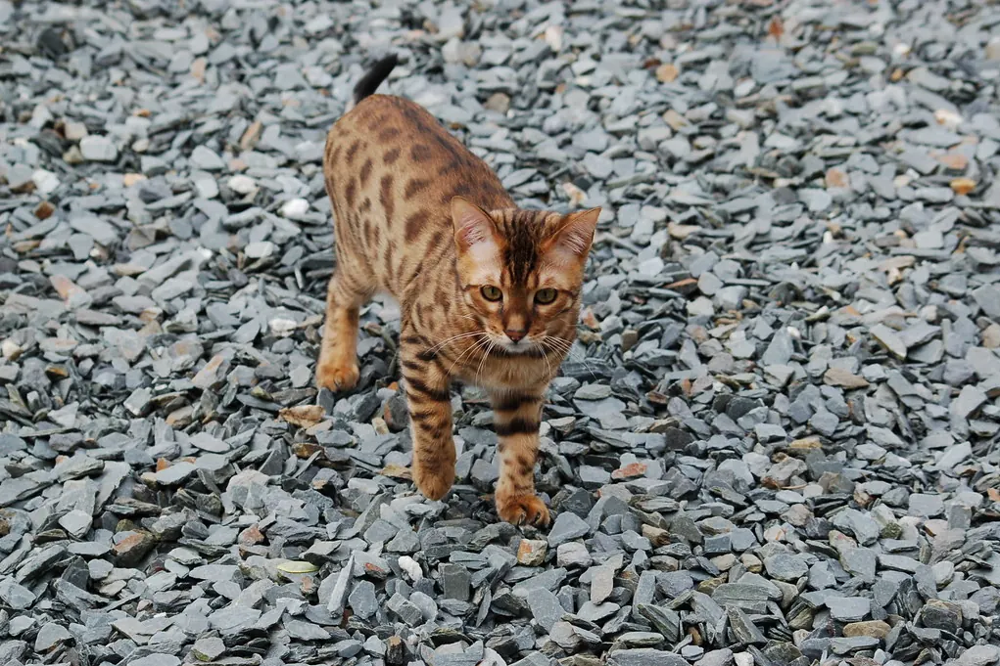

🐆 Bengal : caractère, besoins et éducation

Ses origines
Le bengal a été développé aux États-Unis à partir de croisements entre des chats domestiques et le chat-léopard du Bengale, un petit félin sauvage d'Asie, d'où sa robe tachetée.
Son caractère
Le bengal est vif, intelligent et souvent très bavard. Il aime explorer, grimper, et beaucoup sont attirés par l'eau. Il s'attache à ses humains et réclame de l'attention.
Ses besoins
Ses besoins d'activité sont élevés : plusieurs séances de jeu de chasse par jour, des parcours en hauteur, des jouets d'occupation et des jeux de recherche. Un bengal qui s'ennuie peut devenir destructeur ou très insistant.
L'éducation
Il apprend très vite et adore le clicker : venir à l'appel, tricks, caisse de transport, et même la promenade en harnais avec une habituation très progressive.
L'entretien
Son poil court et soyeux demande peu d'entretien : un brossage de temps en temps suffit.
Sa santé : points d'attention
Certaines maladies héréditaires sont connues dans la race (cœur, yeux, sang), et des tests existent pour certaines d'entre elles. Demandez à l'éleveur les tests réalisés sur les parents et faites-le suivre par votre vétérinaire.
Au quotidien
Trois ou quatre séances de jeu, des étagères et un grand arbre à chat, des jouets à faire tourner, des jeux de recherche de friandises et des séances de clicker.
Avec les enfants et les autres animaux
Joueur et sociable, il peut convenir à des familles actives avec des enfants respectueux. Avec les petits animaux (oiseaux, rongeurs), son instinct de chasse demande de la prudence.
Est-ce la race pour vous ?
- ✅ Oui si : Vous êtes souvent présent et vous aimez jouer et éduquer votre chat.
- ❌ Plutôt non si : Vous cherchez un chat calme qui dort toute la journée, ou vous êtes souvent absent.
Chaque animal est unique : le caractère dépend aussi de son histoire, de sa socialisation et de son éducation. Pensez à l'adoption en refuge ou en association de race, et passez du temps avec des chiens ou des chats de la race avant de vous décider.
Le matériel utile
Idéal pour un chien qui apprend vite : il marque l'instant exact de la réussite.
Questions fréquentes
Le bengal est-il un chat d'appartement ?
Oui, à condition d'aménager l'espace en hauteur et de jouer avec lui plusieurs fois par jour.
Aime-t-il l'eau ?
Beaucoup de bengals sont attirés par l'eau : robinet, gamelle, parfois baignoire. Une fontaine à eau leur plaît souvent.
Est-il adapté à un premier chat ?
Possible pour des maîtres très disponibles et motivés. Sinon, une race plus calme sera plus simple.
Pour aller plus loin : quel clicker choisir · chat qui miaule la nuit · le guide du chat · toutes nos fiches races · quel animal pour moi ?